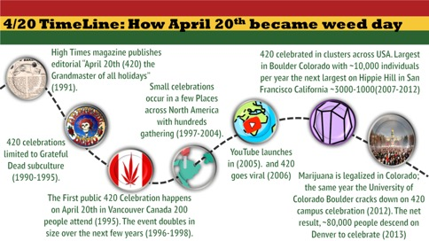
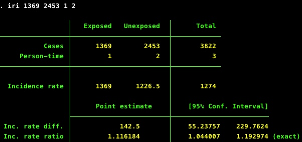
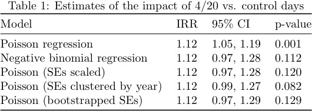
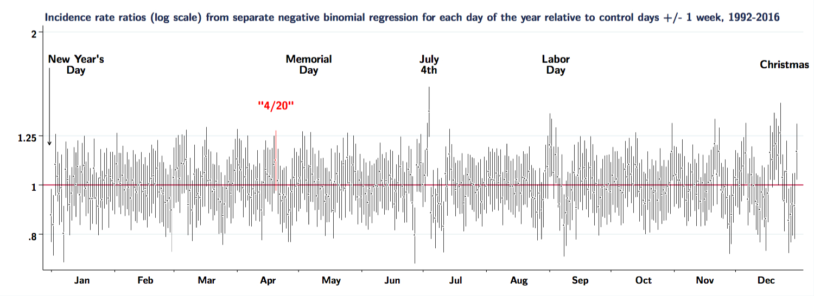
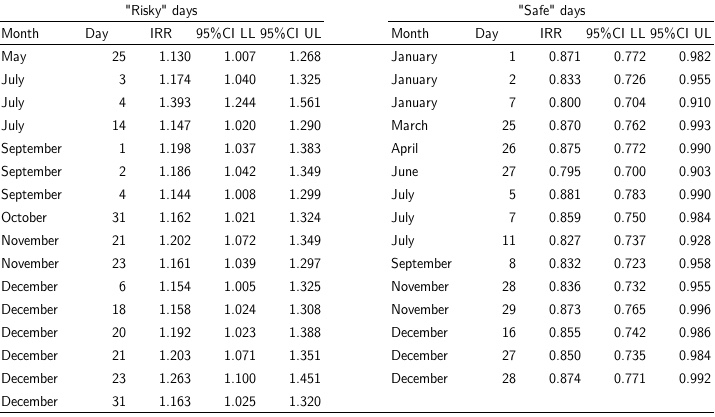
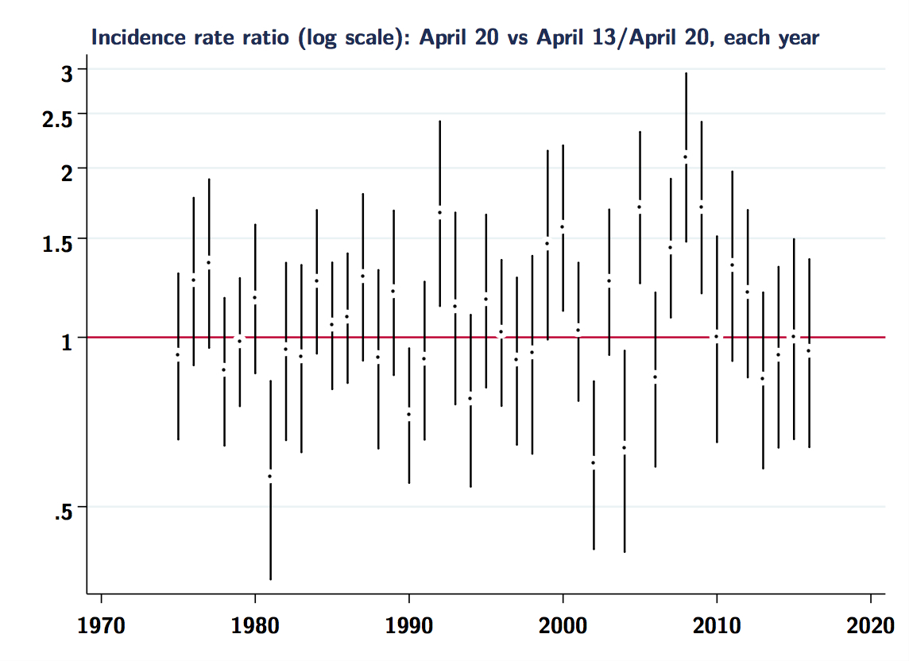
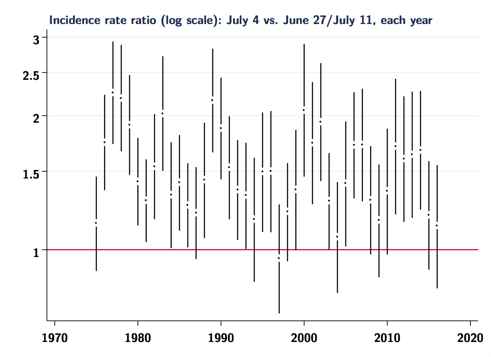

Is 4/20 deadly?
[Note: this post was written with Adam Palayew]
This Friday is April 20th, a day that for most people means nothing. Americans are relieved at having filed their taxes, Canadians are stressed in anticipation of filing theirs, and in Montreal we are still wondering if winter will ever end. However, for a small minority of people, April 20th (or 4/20) is a day of celebration of all things cannabis, with large outdoor gatherings where cannabis consumption is promoted, especially at 4:20pm.
Big deal, right? Let ’em have fun. However, a few weeks ago a short paper was published in a leading medical journal, JAMA Internal Medicine, suggesting that, over the 25 years from 1992-2016, excess cannabis consumption after 4:20pm on 4/20 increased fatal traffic crashes by 12% relative to fatal crashes that occurred one week before and one week after. Here is the key result from the paper:
In total, 1369 drivers were involved in fatal crashes after 4:20 PM on April 20 whereas 2453 drivers were in fatal crashes on control days during the same time intervals (corresponding to 7.1 and 6.4 drivers in fatal crashes per hour, respectively). The risk of a fatal crash was significantly higher on April 20 (relative risk, 1.12; 95% CI, 1.05-1.19; P = .001).
-Staples JA, Redelmeier DA. The April 20 Cannabis Celebration and Fatal Traffic Crashes in the United States JAMA Int Med, Feb 18, 2018, p.E2
Naturally, this sparked (heh) considerable media interest, not only because p<.05 and the finding is “surprising”, but also because cannabis is a hot topic these days (and, of course, April 20th happens every year).
Here in Canada, recreational cannabis is going to be legal throughout the nation later this summer, and the movement to make recreational cannabis legal continues to gather strength in the US. Moreover, the topic of impaired driving due to cannabis consumption has also seen increased attention in recent years. And, of course, using the relative scale to measure the impact also helps to make a splash. Here is a quote from the University of British Columbia’s press release:
Assuming fewer than 10 per cent of Americans drive while high on April 20, our results suggest that drug use at 4/20 celebrations more than doubles the risk of a fatal crash.”
Donald Redelmeier, February 12, 2018
How seriously should we take these findings?
We should say at the beginning, this is an interesting idea and some aspects of the study design are clever and thoughtful. In particular, comparing fatal crashes on 4/20 after 4:20pm to “control” days at the same time of day one week before and after inherently adjusts for seasonal and day-of-the-week factors, changes in vehicle design, as well as obviating the need for a denominator, assuming that the population-at-risk and/or vehicle traffic volume is likely to be similar a week apart from 4/20.
However, there are, we think, some reasons to be skeptical about the plausibility of the findings, as well as some methodological problems to sort out before we decide to start intervening to prevent these excess deaths (it goes without saying that we think driving while intoxicated with any substance that impairs your faculties is a bad idea).
In order for 4/20 celebrations to raise the national number of fatal crashes by 12%, it has to either lead to considerably increased consumption or increases in particularly risky kinds of driving relative to control days. The authors argue for the former, noting that 4/20 is associated with “synchronized mass consumption.” So, is 4/20 popular enough to lead to a meaningful increase in the proportion of people driving-while-high?
The authors defined 4/20 celebrations as having started in 1992, claiming that 4/20 events were popularized as a consequence of High Times magazine publishing a 1991 editorial declaring, “the grandmaster of all holidays: 4/20, or April 20th” (see timeline below). However, there is evidence that the first 4/20 celebration in the US did not occur until 1997 and was limited to Hippie Hill San Francisco with a few thousand people in attendance (some interesting history here, here, and here). The large 4/20 celebrations seen more recently (e.g., the last 5 years) are likely due to a combination of legalization of recreational use in certain areas (Colorado, Washington, etc.), wider societal acceptance, and the growth of the cannabis market into a lucrative industry.

Interestingly, Staples and Redelmeier also show state variations in the impact of 4/20, but the heterogeneity is a little puzzling. Not all states celebrate 4/20 with the same enthusiasm (we are still trying estimate potential size of celebrations), and states that you would expect to have elevated rates if 4/20 causes excess crashes are not the ones highlighted in Figure 2 of their paper (Hawaii, Minnesota, Maine). The largest and most popular 4/20 celebrations have typically been in California and Colorado, but the analysis by SR found that both California and Colorado were states with a lower than median 4/20 risk (or perhaps there are fewer ‘newbies’ smoking there or folks are more accustomed to driving while high or know their limits better).
Is it plausible?
If we try and back out some estimates of what might have to happen on 4/20 to generate a 12% increase in the national rate of fatal car crashes, it seems less and less plausible that the 4/20 effect is reliable or valid. Let’s give it a shot.
In 2015 there were 17,466 driver deaths, so on any given day there are an average of about 48 driver deaths. With respect to person-time at risk, in 2015 there were 3,095 billion (yes, billion) vehicle miles traveled (VMT). Not all of those miles are accrued by drivers, but the 2009 National Household Travel Survey estimated 30 daily VMT per driver and 212 million drivers, which gives use roughly 6.4 billion daily VMT by drivers. So let’s say the base rate is around 48 deaths / 6,400,000,000 VMT per day = 0.0000000075 deaths per VMT, or 7.5 deaths per billion VMT. The transportation survey also suggests that about 1/3 of VMT occur between 4pm and midnight, so let’s also say that during those hours (the time of day SR restrict to) there are roughly 2.5 billion VMT each day.
Over the 25 year period SR tally 1369 deaths on 4/20 and 2453 deaths on control days, which works out to average deaths on those days each year of 1369/25 ~ 55 on 4/20 and 2453/25/2 ~ 49 on control days, an average excess of about 6 deaths each year. If we use our estimates of post-1620h VMT above, that works out to around 55/2.5 = 22 fatal crashes per billion VMT on 4/20 vs. 49/2.5 = 19.6 on control days.
Now, on any given day the fatal crash rate in the whole population can be expressed as a weighted average of the fatal crash rates for non-cannabis-intoxicated drivers and intoxicated cannabis drivers:
\[Rate_{population} = \%(sober) \times Rate_{sober} + \%(stoned) \times Rate_{stoned}\]
In order to estimate how the excess deaths are generated, we need to know what fraction of the population is driving while high, and what their risk might be relative to non-cannabis users.
Both American and Canadian reports suggest a similar prevalence of past-year cannabis use among adults (~12%), but it isn’t clear whether these kinds of casual users are likely to be 4/20 celebrants. Past month use in the US is closer to 8%, and daily use (we’d say more folks likely to be 4/20 celebrants) is more like 2.5%.
What about driving high? Roadside tests in Canada indicate 4-6% of drivers reported having used cannabis, as well as 20% of the 12% of cannabis users admitting to driving within 2 hours of cannabis use (.20*.12 = 0.024) [see the report by Capler et al.]. If we conservatively say that 3% of the population is driving after using cannabis, what is their risk of a fatal crash? A meta-analysis published in BMJ says that acute cannabis use roughly doubles the risk of a fatal crash (but note enormous heterogeneity among studies contributing to that in that estimate). Let’s plug these numbers in and see what we get.
On control days for the sober rate let’s assume based on our estimates above a daily rate of 19 deaths per billion VMT during the hours from 4:20pm to midnight. Let’s also suppose that around 3% of the population are driving while high, and they have twice the fatal crash rate (38/bVMT) of the sober. This generates something similar to the base rate we calculated above (19.6 deaths per billion VMT):
Control day rate: .97(19) + .03(38) = 19.6
Recall that on 4/20 the rate increases by 12% to 22. If we don’t assume the relative risk changes on 4/20, just more people smoking, what proportion of the population would need to be driving while high to generate a rate of 22 per billion VMT? A little algebra tells us that to get to 22 we’d need to see something like:
4/20 day rate: .85(19) + .15(38) = 21.9
15%! That’s nearly one-sixth of the population driving while high on 4/20 from 4:20pm to midnight, which doesn’t, absent any other evidence, seem very likely. (Note that our base rates don’t really need to be correct here; even if the sober rate is 10 or 30/bVMT, you’d still need 15% driving-while-high on 4/20 to increase the rate by 12%). Alternatively, one could also raise the relative risk among cannabis drivers to 6x the base rate and get something close. Or some combination of the two. This means either the nationwide prevalence of driving while using cannabis increases massively on 4/20, or the RR of a fatal crash with the kind of cannabis use happening on 4/20 is absurdly high. Neither of these scenarios seem particularly likely based on what we currently know about cannabis use and driving risks.
Now, of course we are just making guesses, and it’s true that we don’t have much strong evidence for saying that 15% of drivers nationwide being impaired after 4:20pm on 4/20 is an implausibly high estimate, but neither do Staples and Redelmeier present any evidence that it is reasonably plausible (Redelmeier said less than 10% in the quote above).
Extra-Poisson variation (yes, that).
Even if we accept the plausibility of a meaningful point estimate of the effect of 4/20 on fatal crashes, we have other issues to deal with. Namely, other sources of variation in an outcome like daily traffic crashes that are ignored by SR, who effectively treat each year as a matched pair of case and control days but fail to account for this matching when calculating their measure of precision (remember that p<.05).
Between 1992 and 2016 they report 1369 deaths on 4/20 and 2453 deaths on the combined days of 4/13 and 4/27. One can easily reproduce their estimate and measure of precision (RR=1.12, 95%CI 1.04, 1.19) with the basic assumption that there is twice as much unexposed person-time during the “control” days:

Turning to regression models, one could use Poisson regression to model the effect of 4/20 relative to control days on the daily count of deaths, but Poisson regression assumes that the mean and variance of the outcome variable are equal. If there is “extra-Poisson” variation, the data exhibit overdispersion. What is that? We aren’t biostatisticians, so here is a description from the late Joseph Hilbe, who wrote a lovely book on this kind of regression analysis:
Overdispersion is caused by positive correlation between responses or by an excess variation between response probabilities or counts.
Overdispersion also arises when there are violations in the distributional assumptions of the data, such as when the data are clustered and thereby violate the likelihood independence of observations assumption.
Overdispersion may cause standard errors of the estimates to be deflated or underestimated.
-Joseph Hilbe, Negative Binomial Regresson (2nd ed.), p.141.
These issues (overdispersion, clustering) are relevant to the 4/20 problem, so we used the same Fatal Analysis Reporting System (FARS) dataset (restricted to drivers and the same time of day) to see whether accounting for additional variation in daily traffic crashes would provide alternative estimates of precision. Not surprisingly, it does. First, it’s easy to show that the tabular estimate is identical to what you get using Poisson regression (beta=0.11, se=0.034, IRR=1.12, 95%CI 1.05, 1.19). Then one can correct for overdispersion and/or extra-Poisson variation a few different ways:
use negative binomial regression; scale the standard errors by the Pearson-based dispersion statistic; use a robust clustered variance (year as cluster). We also included a model using a resampling technique (bootstrapping with 500 replications) as another possible way to estimate the standard error. Here are the results:

As can be seen in the table above, any of these techniques would have yielded a larger standard error and, obviously, p>.05. We aren’t saying JAMA Int Med wouldn’t have considered it, but there are (sadly), good reasons to think so.
But why consider 4/20 in isolation? Is it especially different from other days of the year? We ran the same analysis (using negative binomial regression) for every day of the year (comparing deaths between 1620h and 2359h on each day relative to the days one week before and after), and here is a plot of the results for each day:

There is quite a lot of noise in these daily crash rate ratios, and few that appear reliably above or below the rates +/- one week. Although accounting for overdispersion leads to estimates for 4/20 that are not statistically distinguishable from the null (a distinction that we don’t think is meaningful), apparently there are several other days to worry about (excess deaths) and/or celebrate (reduced deaths):

Rather than 4/20, should we be concerned about May 25? (out-of-control Geek Pride Day celebrations?) What about July 14? (Americans celebrating Bastille Day?) December 18?
But the table and graph above also suggest it’s not all noise. The elevated rates of fatal crashes around Labor Day and July 4th have been noted many times. So it’s also instructive to compare 4/20 to July the 4th. Here are crude incidence rate-ratios for each year, across the entire range of the FARS data (back to 1975).
First for 4/20:

Same analyses for July 4th:

Note the more consistently elevated estimates for 7/04 vs. 4/20 in each year. Again, it is difficult to see much signal in the 4/20 estimates, and clearly there is a fair bit of noise in both sets of estimates. It would probably be beneficial to study these problems using hierarchical or Bayesian models, as has been suggested for similar analyses of “day” effect problems.
Concluding thoughts
Taken together, we think the preceding discussion of plausibility and methodological concerns should temper any conclusions regarding 4/20 and fatal traffic crashes. We should also point out that this post is not meant as a “take down” or critique of Staples and Redelmeier as researchers. Rather, SR have identified an interesting question and we hoped to provide some additional exploration, context and considerations that were not able to make it into their report. We are writing a more formal paper exploring some of these issues and will post all of the data and code for that analysis, as we have for other papers. We remain skeptical that the impact of 4/20 is as large as SR claim, but are open to seeing other evidence to change our minds.
So, this 4/20, we hope everyone celebrating does so with enthusiasm, but appropriate caution. Don’t overdo it, take public transit or walk. And if you are thinking of driving, promise that you’ll listen to the entirety of the Dead’s Dark Star > Other One > Lovelight from 1970’s Fillmore East show before getting behind the wheel. Have a safe trip!
Stata code for these estimates below:
capture log close
log using blog-420.txt, replace text
// program: blog-420.do
// task: replication of 420 effects
// input: FARS raw data
// output: various figures
// project: FARS and fatal traffic crashes
// author: sam harper \ 19apr2018
// #0
// program setup
version 14
set linesize 80
clear all
macro drop _all
/**********************************************************************/
/* SECTION 1: Replicate Staples / Redelmeier numbers
Notes: */
/**********************************************************************/
/*----------------------------------------------------*/
/* [> 1.1. Prepare dataset <] */
/*----------------------------------------------------*/
* read in FARS person-level datasets for 1975-2016
forvalues i=1975/2016 {
tempfile fars`i'
qui use state county month day hour minute ///
st_case per_no per_typ age sex ///
death_da death_mo death_yr death_hr mod_year ///
death_mn death_tm lag_hrs lag_mins using farsp`i'.dta, clear
qui gen syear=`i'
qui save `fars`i'', replace
}
use `fars1975' , clear
forvalues i=1976/2016 {
qui append using `fars`i''
}
* restrict to drivers
keep if per_typ==1
* replace unknown month of crash
replace month = . if month==99
* replace unknown day of crash
replace day = . if day==99
* replace unknown hour of crash
replace hour = . if hour==99
* replace unknown minute of crash
replace minute = . if minute==99
* revised time of death
gen crashtime = hour*100 + minute
/*----------------------------------------------------*/
/* [> 1.2. Replicate some table numbers <] */
/*----------------------------------------------------*/
* count of fatalities from 1992-2016
count if syear>1991
* exposure to 420
gen e420 = 1 if month==4 & day==20 & ///
(crashtime>=1620 & crashtime<=2359)
* control period
replace e420 = 0 if month==4 & (day==13 | day==27) & ///
(crashtime>=1620 & crashtime<=2359)
recode sex (2=0 "No") (1=1 "Yes") (8/9=.), gen(male)
label var male "Male gender?"
recode syear (1992/2003 = 0 "Remote (1992-2003") ///
(2004/2016 = 1 "Recent (2004-2016"), gen(era)
label var era "Time period"
recode age (0/20 = 1 "<20y") (21/30 =2 "21-30y") (31/40 = 3 "31-40y") ///
(41/50 = 4 "41-50y") (51/97 = 5 ">51y") (998 999 = .), gen(agec)
replace agec = 5 if syear>2008 & age>=98 & age<998
replace agec = . if syear<2009 & age==99
label var agec "Age group"
* Some Fig 1 numbers
tab e420 if syear>1991
tab agec e420 if syear>1991
tab male e420 if syear>1991
tab era e420 if syear>1991
/*----------------------------------------------------*/
/* [> 1.3. Measure of association <] */
/*----------------------------------------------------*/
* exposed cases
qui count if e420==1 & syear>1991
local e1 = r(N)
* unexposed cases
qui count if e420==0 & syear>1991
local e0 = r(N)
* rate ratio (person-time=1 for 420, 2 for control days)
iri `e1' `e0' 1 2
disp as result "IRR= " %3.2f r(irr) as result ///
"; 95%CI: (" %3.2f r(lb_irr) as result ", " %3.2f r(ub_irr) ")"
* compare to published estimates
* rate ratio (person-time=1 for 420, 2 for control days)
iri 1369 2453 1 2
disp as result "SR IRR= " %3.2f r(irr) as result ///
"; 95%CI: (" %3.2f r(lb_irr) as result ", " %3.2f r(ub_irr) ")"
/*------------------------------------ End of SECTION 1 ------------------------------------*/
/**********************************************************************/
/* SECTION 2: Correcting for overdispersion
Notes: */
/**********************************************************************/
/*----------------------------------------------------*/
/* [> 2.1. Collapse to daily deaths 1620h-2359h <] */
/*----------------------------------------------------*/
* indicator for crashtimes between 1620h and 2359h
gen d420 = (crashtime>=1620 & crashtime<=2359 & crashtime!=.)
* aggregate to daily data
collapse (count) deaths=per_no, by(syear month day d420)
* create date variable
gen date = mdy(month, day, syear)
format date %td
* restrict to crashes between 1620h and 2359h
keep if d420==1
* format month, year, day of week, day of year
drop if day==.
drop if month==.
replace month=month(date)
gen year=year(date)
gen dow=dow(date) // day of week
gen doy=doy(date) // day of year
* define exposure to 4/20, controls +/- 7 days
gen exp420 = 1 if month==4 & day==20
replace exp420 = 0 if exp420[ _n - 7 ] == 1
replace exp420 = 0 if exp420[ _n + 7 ] == 1
* series of regression models
poisson deaths i.exp420 if syear>1991, irr nolog
estimates store m1
nbreg deaths i.exp420 if syear>1991, irr nolog
estimates store m2
glm deaths i.exp420 if syear>1991, fam(poi) scale(x2) eform nolog
estimates store m3
poisson deaths i.exp420 if syear>1991, vce(cl syear) irr nolog
estimates store m4
poisson deaths i.exp420 if syear>1991, vce(bootstrap, reps(500)) irr
estimates store m5
esttab m1 m2 m3 m4 m5, b(%3.2f) ci(%3.2f) wide eform nostar
drop exp420
/*----------------------------------------------------*/
/* [> 2.2. NB regression for each day <] */
/*----------------------------------------------------*/
* placeholders for regression coefficients and 95% CIs
gen nbirr = .
gen nbirr_lb = .
gen nbirr_ub = .
* exposure variable
gen expday = .
* sort by month and
sort year month day
* define exposure and run regression, store results
qui levelsof month, local(months) // cycle through months
foreach m of local months {
qui levelsof day if month==`m', local(days) // cycle through days
foreach d of local days {
qui replace expday = .
qui replace expday = 1 if month==`m' & day==`d' & syear>1991
qui replace expday = 0 if expday[ _n - 7 ] == 1
qui replace expday = 0 if expday[ _n + 7 ] == 1
qui nbreg deaths i.expday if syear>1991, nolog
qui replace nbirr = exp(_b[1.expday]) if month==`m' & day==`d' & syear>1991
qui replace nbirr_lb = exp(_b[1.expday] - 1.96*_se[1.expday]) ///
if month==`m' & day==`d' & syear>1991
qui replace nbirr_ub = exp(_b[1.expday] + 1.96*_se[1.expday]) ///
if month==`m' & day==`d' & syear>1991
}
}
* list days with "significant" effects
count if syear==2016 & (nbirr_lb>1 | nbirr_ub<1)
list month day nbirr nbirr_lb nbirr_ub if syear==2016 & (nbirr_lb>1 | nbirr_ub<1)
* graph of IRR each day
egen md = group(month day)
tw (rcap nbirr_ub nbirr_lb md if md!=111, msize(zero) lcolor(black) lwidth(vvthin)) ///
(rcap nbirr_ub nbirr_lb md if md==111, msize(zero) lcolor(red) lwidth(vvthin)) ///
(scatter nbirr md if md!=111, mfcolor(black) mlcolor(white) mlwidth(vthin) msize(vsmall)) ///
(scatter nbirr md if md==111, mfcolor(red) mlcolor(white) mlwidth(vthin) msize(vsmall)) ///
(pcarrowi 1.7 0 1.2 0 (3), lcolor(black) mcolor(black) msize(small) lwidth(thin)), ///
ylab(0.8 1 1.25 2, angle(horizontal)) yscale(log) xsize(11) yline(1) ///
xlab(16 "Jan" 47 "Feb" 77 "Mar" 107 "Apr" 138 "May" 168 "Jun" 199 "Jul" 230 ///
"Aug" 260 "Sep" 291 "Oct" 321 "Nov" 351 "Dec", noticks) ///
xmtick(1 32 61 92 122 153 183 214 245 275 306 336) ///
legend(off) text(1.45 111 `""4/20""', size(small) color(red)) ///
text(1.75 186 "July" "4th", size(small)) ///
text(1.75 248 "Labor" "Day", size(small)) ///
text(1.75 127 "Memorial" "Day", size(small)) ///
text(1.75 360 "Christmas", size(small)) ///
text(1.75 -2 "New Year's" "Day", place(e) size(small)) xtitle("") ///
graphregion(fcolor(white) lcolor(white) lstyle(none)) ///
title("Incidence rate ratios (log scale) from separate negative binomial regression for each day of the year relative to control days +/- 1 week, 1992-2016", ///
size(medsmall) pos(11)) name(nb, replace)
/*------------------------------------ End of SECTION 2 ------------------------------------*/
/**********************************************************************/
/* SECTION 3: Annual estimates for 4/20 and 7/4
Notes: */
/**********************************************************************/
/*----------------------------------------------------*/
/* [> 3.1. Analysis and graph for 4/20 <] */
/*----------------------------------------------------*/
* define exposure to 4/20, controls +/- 7 days
gen exp420 = 1 if month==4 & day==20
replace exp420 = 0 if exp420[ _n - 7 ] == 1
replace exp420 = 0 if exp420[ _n + 7 ] == 1
* loop over years and estimate IRR and 95% CI
gen pt420 = 1 // person-time
gen iri420=. // IRR
gen iri420lb=. // IRR lower bound
gen iri420ub=. // IRR upper bound
forvalues i=1975/2016 {
qui ir deaths exp420 pt420 if year==`i'
qui replace iri420 = r(irr) if year==`i' & exp420!=.
qui replace iri420lb = r(lb_irr) if year==`i' & exp420!=.
qui replace iri420ub = r(ub_irr) if year==`i' & exp420!=.
}
*
gen lniri420 = ln(iri420)
gen lniri420se = abs(ln(iri420ub) - ln(iri420lb)) / (2*invnorm(0.975))
tw (rcap iri420ub iri420lb year if exp420==1, msize(zero) lcolor(black) ///
lwidth(medium)) ///
(scatter iri420 year if exp420==1, mfcolor(black) mlcolor(white) ///
mlwidth(thick) msize(medsmall)) ///
, ylab(,angle(horizontal)) yscale(log) yline(1) ///
graphregion(fcolor(white) lcolor(white) lstyle(none)) ///
name(year420iri, replace) legend(off) xtitle("") ///
title("Incidence rate ratio (log scale): April 20 vs April 13/April 20, each year", ///
pos(11) size(medsmall))
/*----------------------------------------------------*/
/* [> 3.2. Analysis and graph for 7/4 <] */
/*----------------------------------------------------*/
* define exposure to 7/4, controls +/- 7 days
gen exp704 = 1 if month==7 & day==4
replace exp704 = 0 if exp704[ _n - 7 ] == 1
replace exp704 = 0 if exp704[ _n + 7 ] == 1
* loop over years and estimate IRR and 95% CI
gen pt704 = 1 // person-time
gen iri704=. // IRR
gen iri704lb=. // IRR lower bound
gen iri704ub=. // IRR upper bound
forvalues i=1975/2016 {
qui ir deaths exp704 pt704 if year==`i'
qui replace iri704 = r(irr) if year==`i' & exp704!=.
qui replace iri704lb = r(lb_irr) if year==`i' & exp704!=.
qui replace iri704ub = r(ub_irr) if year==`i' & exp704!=.
}
tw (rcap iri704ub iri704lb year if exp704==1, msize(zero) lcolor(black) ///
lwidth(medium)) ///
(scatter iri704 year if exp704==1, mfcolor(black) mlcolor(white) ///
mlwidth(thick) msize(medsmall)) ///
, ylab(,angle(horizontal)) yscale(log) yline(1) ///
graphregion(fcolor(white) lcolor(white) lstyle(none)) ///
name(year704iri, replace) legend(off) xtitle("") ///
title("Incidence rate ratio (log scale): July 4 vs. June 27/July 11, each year", pos(11) ///
size(medsmall))
/*----------------------------------------------------*/
/* [> 3.3. Generate figure <] */
/*----------------------------------------------------*/
* combine graphs for annual estimates
graph combine year420iri year704iri, ycommon rows(1) ///
graphregion(fcolor(white) lcolor(white) lstyle(none)) ///
name(yearly, replace)
* now combine with daily pooled estimates
graph combine nb yearly, ycommon rows(2) ///
graphregion(fcolor(white) lcolor(white) lstyle(none)) ///
name(all, replace)
log close
exit